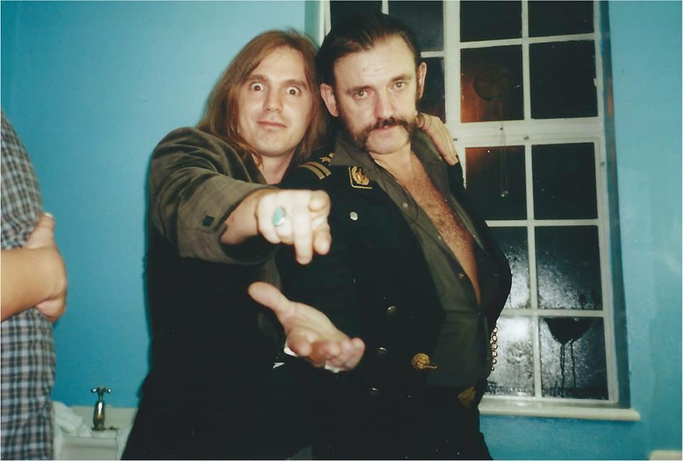

Lemmy had a strange personal life, he was never married yet he has slept with more than 1000 women. At the age of 17 he had a son who was given for adoption. His son Sean only started regrouping with his parents later in life. Lemmy said in a documentary that the most precious thing in his house is his son who was next to to him.
Lemmy always had problems when dealing with drugs, he claims that he had done all kinds of drugs, except Heroin, because a girlfriend that he loved a lot died from overdose. Lemmy was chain smoking from the age of 12 and was drinking one Jack Daniels whiskey every day since he was 30. It really is a miracle that he manage to live up to 70 years old. A magazine declared that its impossible that he is alive. He was diagnosed with prostate cancer 3 days before his death.
His last wish was to be cremated and some of his ashes to be put inside bullet shells and given to his closest friends.
